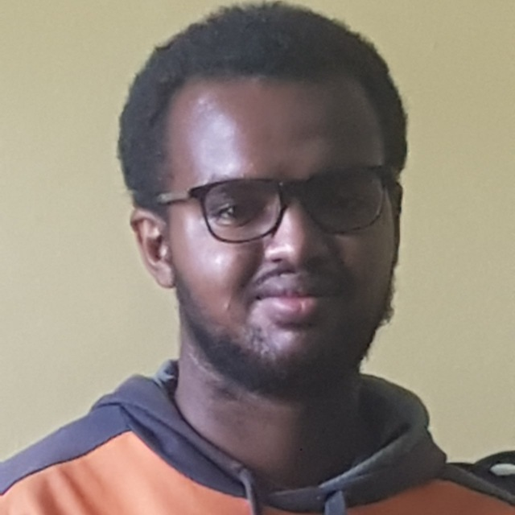

Kaleb Wondwossen

Summary
I am hardworking and dedicated indiviual who has interest in software developement, specially backend.
Education:
- Electrical and Computer Engineering at Addis Ababa Science and Technology University (10/2019 - Present)
- GPA: 3.73
- Object-oriented programming (OOP) (In Java)
- Introduction to computer programming
- Database System
- Computer Organization and Architecture
- Microprocessor and Interface
- Software Engineering
Work Experience:
- Intern at Kuraz Technology Plc (07/2023 - Present)
- Software Development, Graphics Design, and Education platform Company
Skills:
- C++, C, Java
- PHP, Laravel
Languages:
- English: Limited Working Proficiency
- Amharic: Full Professional Proficiency
Interests:
- Programming
- Problem Solving
- Backend
- Machine Learning
- IOT
Personal Projects: